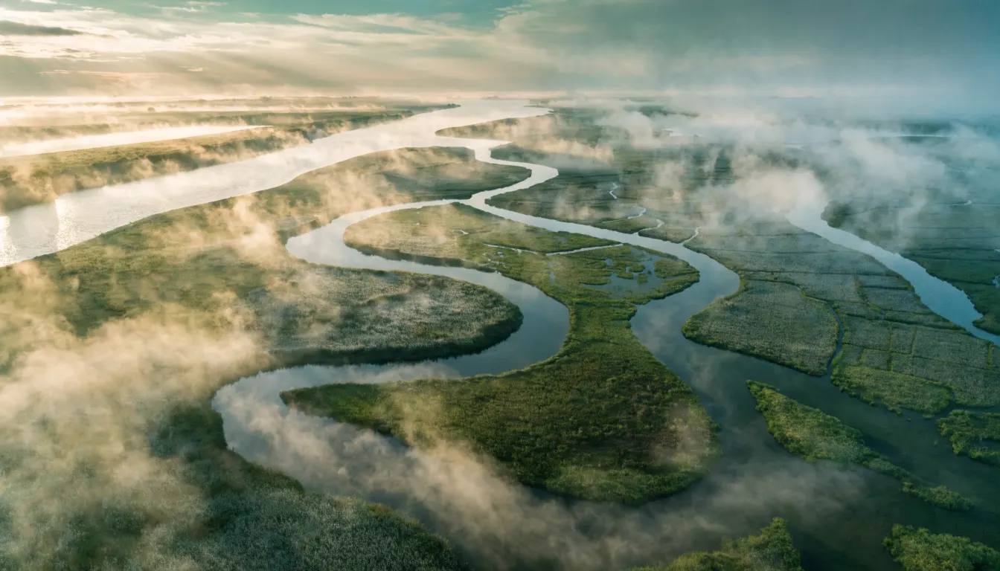
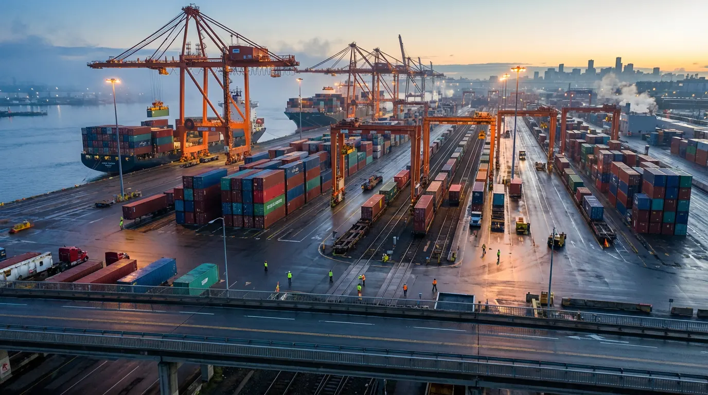

Documentary films, observations, and systems analysis exploring the forces that shape civilisation across time.
What We Are
Protosynthesis Media is a documentary studio exploring the relationship between geography, infrastructure, movement, and human systems.
Through cinematic storytelling and structured analysis, we examine how landscapes shape opportunity, how routes shape societies, and how the physical world continues to influence the course of civilisation.

The Lens
Geography is not scenery. It is structure.
Mountains, rivers, coastlines, borders, roads, and cities are not simply features of the world. They form the framework through which people, goods, ideas, and influence move.
To understand movement is to understand possibility.
To understand possibility is to understand civilisation.
Our work follows these movements wherever they lead.
Featured Works
In Exploration
What we are investigating right now
- Nepal — Geography of Constraint & Connection
- River Civilisations — The Arteries of Settlement
- British Rail — Movement Across An Island
- Mountain Systems — Barriers, Corridors & Power

A Library Of How The World Moves
We are building a library of how the world moves.
Not a catalogue of programmes.
Not a collection of opinions.
A growing record of the routes, systems, landscapes, and patterns that continue to shape human civilisation.
Each observation contributes to a larger body of understanding — one intended to remain valuable long after the moment in which it was created.
Connected Projects
The Library
Research, maps, essays, and extended exploration.
House of Gold
Original music and sound created alongside our films and observations.
Protosynthesis
The wider body of inquiry connecting observation, understanding, and synthesis.